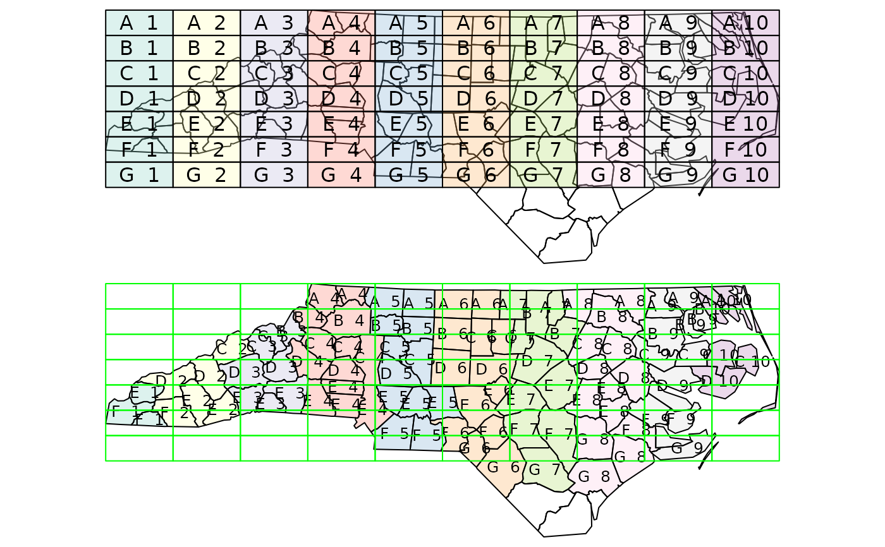

spatial join, spatial filter
st_join(x, y, join, ...)
# S3 method for sf
st_join(
x,
y,
join = st_intersects,
...,
suffix = c(".x", ".y"),
left = TRUE,
largest = FALSE
)
st_filter(x, y, ...)
# S3 method for sf
st_filter(x, y, ..., .predicate = st_intersects)object of class sf
object of class sf
geometry predicate function with the same profile as st_intersects; see details
for st_join: arguments passed on to the join function or to st_intersection when largest is TRUE; for st_filter arguments passed on to the .predicate function, e.g. prepared, or a pattern for st_relate
length 2 character vector; see merge
logical; if TRUE return the left join, otherwise an inner join; see details.
see also left_join
logical; if TRUE, return x features augmented with the fields of y that have the largest overlap with each of the features of x; see https://github.com/r-spatial/sf/issues/578
geometry predicate function with the same profile as st_intersects; see details
an object of class sf, joined based on geometry
alternative values for argument join are:
any user-defined function of the same profile as the above
A left join returns all records of the x object with y fields for non-matched records filled with NA values; an inner join returns only records that spatially match.
To replicate the results of st_within(x, y) you will need to use st_join(x, y, join = "st_within", left = FALSE).
a = st_sf(a = 1:3,
geom = st_sfc(st_point(c(1,1)), st_point(c(2,2)), st_point(c(3,3))))
b = st_sf(a = 11:14,
geom = st_sfc(st_point(c(10,10)), st_point(c(2,2)), st_point(c(2,2)), st_point(c(3,3))))
st_join(a, b)
#> Simple feature collection with 4 features and 2 fields
#> Geometry type: POINT
#> Dimension: XY
#> Bounding box: xmin: 1 ymin: 1 xmax: 3 ymax: 3
#> CRS: NA
#> a.x a.y geom
#> 1 1 NA POINT (1 1)
#> 2 2 12 POINT (2 2)
#> 2.1 2 13 POINT (2 2)
#> 3 3 14 POINT (3 3)
st_join(a, b, left = FALSE)
#> Simple feature collection with 3 features and 2 fields
#> Geometry type: POINT
#> Dimension: XY
#> Bounding box: xmin: 2 ymin: 2 xmax: 3 ymax: 3
#> CRS: NA
#> a.x a.y geom
#> 2 2 12 POINT (2 2)
#> 2.1 2 13 POINT (2 2)
#> 3 3 14 POINT (3 3)
# two ways to aggregate y's attribute values outcome over x's geometries:
st_join(a, b) %>% aggregate(list(.$a.x), mean)
#> Simple feature collection with 3 features and 3 fields
#> Attribute-geometry relationship: 0 constant, 2 aggregate, 1 identity
#> Geometry type: POINT
#> Dimension: XY
#> Bounding box: xmin: 1 ymin: 1 xmax: 3 ymax: 3
#> CRS: NA
#> Group.1 a.x a.y geometry
#> 1 1 1 NA POINT (1 1)
#> 2 2 2 12.5 POINT (2 2)
#> 3 3 3 14.0 POINT (3 3)
if (require(dplyr, quietly = TRUE)) {
st_join(a, b) %>% group_by(a.x) %>% summarise(mean(a.y))
}
#> Simple feature collection with 3 features and 2 fields
#> Geometry type: POINT
#> Dimension: XY
#> Bounding box: xmin: 1 ymin: 1 xmax: 3 ymax: 3
#> CRS: NA
#> # A tibble: 3 × 3
#> a.x `mean(a.y)` geom
#> <int> <dbl> <POINT>
#> 1 1 NA (1 1)
#> 2 2 12.5 (2 2)
#> 3 3 14 (3 3)
# example of largest = TRUE:
nc <- st_transform(st_read(system.file("shape/nc.shp", package="sf")), 2264)
#> Reading layer `nc' from data source
#> `/tmp/RtmpO2c09y/temp_libpath120505c4bcef6/sf/shape/nc.shp'
#> using driver `ESRI Shapefile'
#> Simple feature collection with 100 features and 14 fields
#> Geometry type: MULTIPOLYGON
#> Dimension: XY
#> Bounding box: xmin: -84.32385 ymin: 33.88199 xmax: -75.45698 ymax: 36.58965
#> Geodetic CRS: NAD27
gr = st_sf(
label = apply(expand.grid(1:10, LETTERS[10:1])[,2:1], 1, paste0, collapse = " "),
geom = st_make_grid(st_as_sfc(st_bbox(nc))))
gr$col = sf.colors(10, categorical = TRUE, alpha = .3)
# cut, to check, NA's work out:
gr = gr[-(1:30),]
nc_j <- st_join(nc, gr, largest = TRUE)
#> Warning: attribute variables are assumed to be spatially constant throughout all geometries
# the two datasets:
opar = par(mfrow = c(2,1), mar = rep(0,4))
plot(st_geometry(nc_j))
plot(st_geometry(gr), add = TRUE, col = gr$col)
text(st_coordinates(st_centroid(gr)), labels = gr$label)
#> Warning: st_centroid assumes attributes are constant over geometries of x
# the joined dataset:
plot(st_geometry(nc_j), border = 'black', col = nc_j$col)
text(st_coordinates(st_centroid(nc_j)), labels = nc_j$label, cex = .8)
#> Warning: st_centroid assumes attributes are constant over geometries of x
plot(st_geometry(gr), border = 'green', add = TRUE)

par(opar)
# st_filter keeps the geometries in x where .predicate(x,y) returns any match in y for x
st_filter(a, b)
#> Simple feature collection with 2 features and 1 field
#> Geometry type: POINT
#> Dimension: XY
#> Bounding box: xmin: 2 ymin: 2 xmax: 3 ymax: 3
#> CRS: NA
#> a geom
#> 1 2 POINT (2 2)
#> 2 3 POINT (3 3)
# for an anti-join, use the union of y
st_filter(a, st_union(b), .predicate = st_disjoint)
#> Simple feature collection with 1 feature and 1 field
#> Geometry type: POINT
#> Dimension: XY
#> Bounding box: xmin: 1 ymin: 1 xmax: 1 ymax: 1
#> CRS: NA
#> a geom
#> 1 1 POINT (1 1)